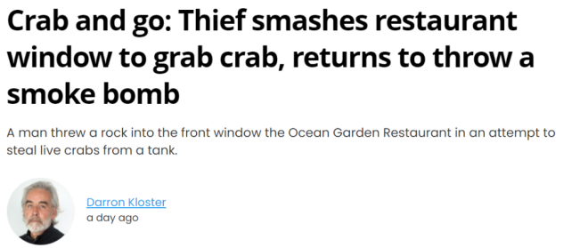
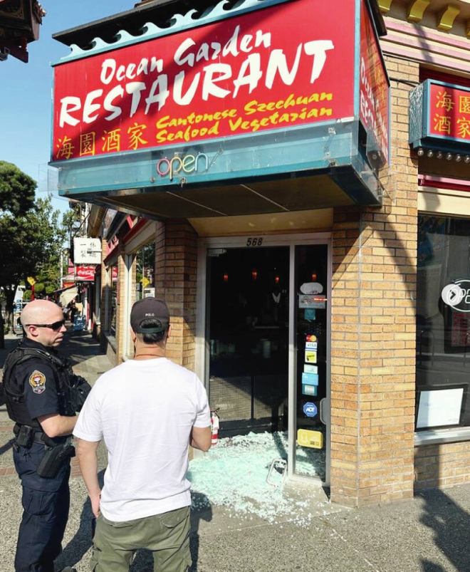
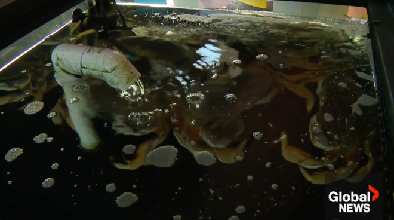
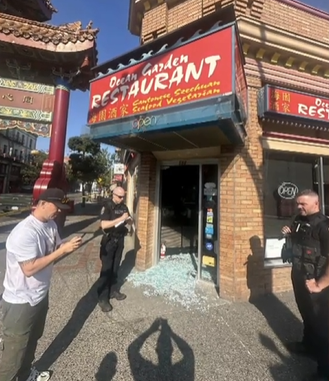
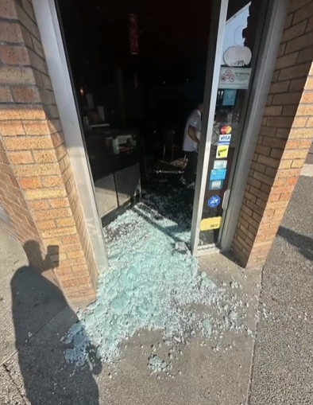
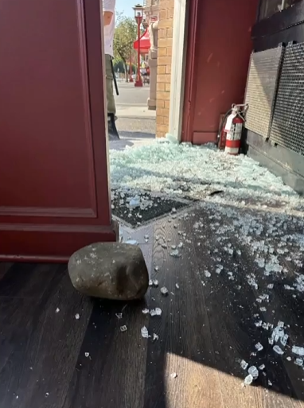
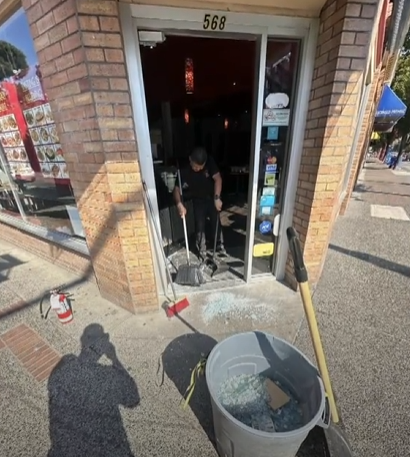
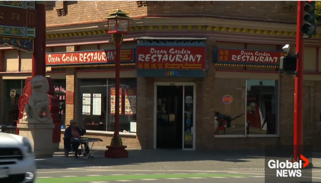

近日，BC省维多利亚市唐人街的一家中餐馆遭遇了一起最离奇的打砸抢事件。
海园酒家（Ocean Garden Restaurant）的老板表示，本周三早上8:30左右，他们接到了维多利亚警察局的电话，得知有人砸碎了餐馆的玻璃大门，试图偷走一批活螃蟹。


图源：INSTAGRAM
餐馆老板周三在社交媒体上发帖称，他们对所发生的一切感到震惊。
“今天早上8店左右，一名男子砸碎了我们的前门，并偷走了我们的活螃蟹……是的，你没看错，不是收银机里的钱，也不是店里的酒或设备，是池子里的活螃蟹。”
“我们很幸运有人目睹了这起事件。”

图源：Global News
帖子说，目击者与该男子对峙，要求他将螃蟹放回去，并报警把他吓跑了。
事发2个小时后，这名男子被警方逮捕并面临指控，随后有条件释放，并将再次接受开庭审理。警方表示，任何被指控犯罪的人在被证明有罪之前都被视为无罪。




图源：Facebook
然而，警方称，这名男子在当天下午2点左右又返回餐馆，并投掷了一枚”烟雾弹”。当时餐厅内大约有30人正在用餐，所有人都被吓跑了。
警方在一份声明中说：”由于接到报告的时间延误，当警察赶到现场时，餐厅内已经疏散。”

图源：Global News
华人老板Larry Yang表示，这是一次令人沮丧的经历。
他说：”生意已经很难做了，现在又发生了这样的事。”
Yang说，餐厅已经订购了新的玻璃来修复损坏，将”努力照常营业”。
目前调查仍在进行中。